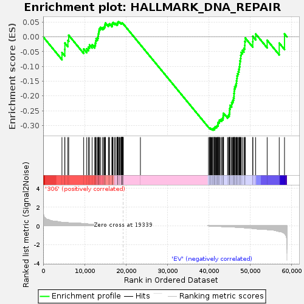
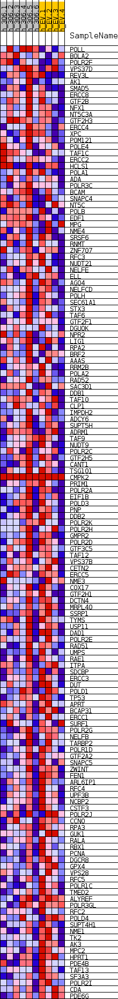
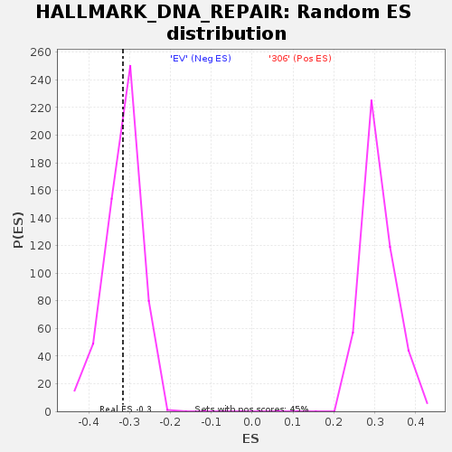

| | | Dataset | 306_EV_express.306_EV.cls#306_versus_EV |
| Phenotype | 306_EV.cls#306_versus_EV |
| Upregulated in class | EV |
| GeneSet | HALLMARK_DNA_REPAIR |
| Enrichment Score (ES) | -0.31599766 |
| Normalized Enrichment Score (NES) | -0.9995901 |
| Nominal p-value | 0.42440802 |
| FDR q-value | 0.7906007 |
| FWER p-Value | 1.0 |
Table: GSEA Results Summary

Fig 1: Enrichment plot: HALLMARK_DNA_REPAIR
Profile of the Running ES Score & Positions of GeneSet Members on the Rank Ordered List
| SYMBOL | TITLE | RANK IN GENE LIST | RANK METRIC SCORE | RUNNING ES | CORE ENRICHMENT | | 1 | POLL | NNN | 4533 | 0.369 | -0.0531 | No |
| 2 | BOLA2 | NNN | 5216 | 0.339 | -0.0426 | No |
| 3 | POLR2F | NNN | 5238 | 0.338 | -0.0208 | No |
| 4 | VPS37D | NNN | 5968 | 0.327 | -0.0119 | No |
| 5 | REV3L | NNN | 6165 | 0.317 | 0.0055 | No |
| 6 | AK1 | NNN | 9776 | 0.231 | -0.0409 | No |
| 7 | SMAD5 | NNN | 10516 | 0.203 | -0.0402 | No |
| 8 | ERCC8 | NNN | 10922 | 0.190 | -0.0347 | No |
| 9 | GTF2B | NNN | 11183 | 0.187 | -0.0269 | No |
| 10 | NFX1 | NNN | 11808 | 0.166 | -0.0267 | No |
| 11 | NT5C3A | NNN | 12445 | 0.147 | -0.0280 | No |
| 12 | GTF2H3 | NNN | 12601 | 0.144 | -0.0212 | No |
| 13 | ERCC4 | NNN | 12688 | 0.142 | -0.0134 | No |
| 14 | XPC | NNN | 12782 | 0.139 | -0.0059 | No |
| 15 | POM121 | NNN | 13111 | 0.130 | -0.0030 | No |
| 16 | POLE4 | NNN | 13238 | 0.127 | 0.0032 | No |
| 17 | TAF1C | NNN | 13309 | 0.124 | 0.0101 | No |
| 18 | ERCC2 | NNN | 13396 | 0.122 | 0.0166 | No |
| 19 | HCLS1 | NNN | 13480 | 0.120 | 0.0231 | No |
| 20 | POLA1 | NNN | 13629 | 0.117 | 0.0282 | No |
| 21 | ADA | NNN | 13817 | 0.112 | 0.0323 | No |
| 22 | POLR3C | NNN | 14285 | 0.101 | 0.0310 | No |
| 23 | BCAM | NNN | 14583 | 0.094 | 0.0321 | No |
| 24 | SNAPC4 | NNN | 14791 | 0.090 | 0.0344 | No |
| 25 | NT5C | NNN | 14889 | 0.088 | 0.0385 | No |
| 26 | POLB | NNN | 14954 | 0.086 | 0.0431 | No |
| 27 | EDF1 | NNN | 15033 | 0.084 | 0.0472 | No |
| 28 | MPG | NNN | 15743 | 0.073 | 0.0400 | No |
| 29 | NME4 | NNN | 15855 | 0.071 | 0.0427 | No |
| 30 | SRSF6 | NNN | 16016 | 0.067 | 0.0443 | No |
| 31 | RNMT | NNN | 16597 | 0.060 | 0.0383 | No |
| 32 | ZNF707 | NNN | 16622 | 0.059 | 0.0418 | No |
| 33 | RFC3 | NNN | 16656 | 0.058 | 0.0450 | No |
| 34 | NUDT21 | NNN | 16802 | 0.055 | 0.0461 | No |
| 35 | NELFE | NNN | 16864 | 0.053 | 0.0486 | No |
| 36 | ELL | NNN | 17280 | 0.044 | 0.0444 | No |
| 37 | AGO4 | NNN | 17375 | 0.043 | 0.0456 | No |
| 38 | NELFCD | NNN | 17770 | 0.035 | 0.0412 | No |
| 39 | POLH | NNN | 17878 | 0.033 | 0.0415 | No |
| 40 | SEC61A1 | NNN | 17912 | 0.032 | 0.0430 | No |
| 41 | STX3 | NNN | 17921 | 0.032 | 0.0450 | No |
| 42 | TAF6 | NNN | 17930 | 0.032 | 0.0470 | No |
| 43 | GTF2F1 | NNN | 17981 | 0.031 | 0.0481 | No |
| 44 | DGUOK | NNN | 18023 | 0.030 | 0.0494 | No |
| 45 | NPR2 | NNN | 18064 | 0.029 | 0.0506 | No |
| 46 | LIG1 | NNN | 18152 | 0.028 | 0.0510 | No |
| 47 | RPA2 | NNN | 18383 | 0.023 | 0.0485 | No |
| 48 | BRF2 | NNN | 18459 | 0.021 | 0.0486 | No |
| 49 | AAAS | NNN | 18543 | 0.019 | 0.0484 | No |
| 50 | RRM2B | NNN | 18791 | 0.014 | 0.0451 | No |
| 51 | POLA2 | NNN | 18861 | 0.012 | 0.0447 | No |
| 52 | RAD52 | NNN | 18892 | 0.012 | 0.0450 | No |
| 53 | SAC3D1 | NNN | 18916 | 0.011 | 0.0453 | No |
| 54 | DDB1 | NNN | 18956 | 0.011 | 0.0453 | No |
| 55 | TAF10 | NNN | 18969 | 0.010 | 0.0458 | No |
| 56 | CLP1 | NNN | 18983 | 0.010 | 0.0462 | No |
| 57 | IMPDH2 | NNN | 18986 | 0.010 | 0.0469 | No |
| 58 | ADCY6 | NNN | 19048 | 0.009 | 0.0464 | No |
| 59 | SUPT5H | NNN | 19101 | 0.007 | 0.0460 | No |
| 60 | ADRM1 | NNN | 19116 | 0.007 | 0.0462 | No |
| 61 | TAF9 | NNN | 19122 | 0.007 | 0.0466 | No |
| 62 | NUDT9 | NNN | 19196 | 0.005 | 0.0456 | No |
| 63 | POLR2C | NNN | 19244 | 0.003 | 0.0451 | No |
| 64 | GTF2H5 | NNN | 19261 | 0.003 | 0.0450 | No |
| 65 | CANT1 | NNN | 19298 | 0.002 | 0.0445 | No |
| 66 | TSG101 | NNN | 19335 | 0.000 | 0.0439 | No |
| 67 | CMPK2 | NNN | 23466 | 0.000 | -0.0265 | No |
| 68 | PRIM1 | NNN | 39905 | -0.005 | -0.3063 | No |
| 69 | POLR2A | NNN | 40183 | -0.012 | -0.3102 | No |
| 70 | EIF1B | NNN | 40195 | -0.012 | -0.3096 | No |
| 71 | POLD3 | NNN | 40212 | -0.013 | -0.3090 | No |
| 72 | PNP | NNN | 40374 | -0.016 | -0.3107 | No |
| 73 | DDB2 | NNN | 40390 | -0.017 | -0.3099 | No |
| 74 | POLR2K | NNN | 40565 | -0.020 | -0.3115 | No |
| 75 | POLR2H | NNN | 40735 | -0.024 | -0.3128 | No |
| 76 | GMPR2 | NNN | 40802 | -0.025 | -0.3123 | No |
| 77 | POLR2D | NNN | 41021 | -0.030 | -0.3140 | Yes |
| 78 | GTF3C5 | NNN | 41029 | -0.030 | -0.3122 | Yes |
| 79 | TAF12 | NNN | 41035 | -0.030 | -0.3103 | Yes |
| 80 | VPS37B | NNN | 41320 | -0.036 | -0.3128 | Yes |
| 81 | CETN2 | NNN | 41358 | -0.037 | -0.3110 | Yes |
| 82 | ERCC5 | NNN | 41363 | -0.037 | -0.3087 | Yes |
| 83 | NME3 | NNN | 41379 | -0.037 | -0.3065 | Yes |
| 84 | COX17 | NNN | 41510 | -0.040 | -0.3061 | Yes |
| 85 | GTF2H1 | NNN | 41547 | -0.040 | -0.3041 | Yes |
| 86 | DCTN4 | NNN | 41740 | -0.044 | -0.3045 | Yes |
| 87 | MRPL40 | NNN | 41921 | -0.048 | -0.3044 | Yes |
| 88 | SSRP1 | NNN | 41948 | -0.049 | -0.3016 | Yes |
| 89 | TYMS | NNN | 42064 | -0.051 | -0.3002 | Yes |
| 90 | USP11 | NNN | 42205 | -0.054 | -0.2991 | Yes |
| 91 | DAD1 | NNN | 42210 | -0.054 | -0.2956 | Yes |
| 92 | POLR2E | NNN | 42219 | -0.054 | -0.2922 | Yes |
| 93 | RAD51 | NNN | 42256 | -0.055 | -0.2892 | Yes |
| 94 | UMPS | NNN | 42452 | -0.060 | -0.2886 | Yes |
| 95 | RAE1 | NNN | 42511 | -0.061 | -0.2856 | Yes |
| 96 | ITPA | NNN | 42538 | -0.061 | -0.2821 | Yes |
| 97 | SDCBP | NNN | 42716 | -0.065 | -0.2808 | Yes |
| 98 | ERCC3 | NNN | 43042 | -0.072 | -0.2816 | Yes |
| 99 | DUT | NNN | 43122 | -0.074 | -0.2782 | Yes |
| 100 | POLD1 | NNN | 43359 | -0.079 | -0.2770 | Yes |
| 101 | TP53 | NNN | 43421 | -0.081 | -0.2727 | Yes |
| 102 | APRT | NNN | 43450 | -0.081 | -0.2679 | Yes |
| 103 | BCAP31 | NNN | 43483 | -0.082 | -0.2631 | Yes |
| 104 | ERCC1 | NNN | 43539 | -0.084 | -0.2585 | Yes |
| 105 | SURF1 | NNN | 44495 | -0.092 | -0.2687 | Yes |
| 106 | POLR2G | NNN | 44713 | -0.098 | -0.2660 | Yes |
| 107 | NELFB | NNN | 44890 | -0.102 | -0.2623 | Yes |
| 108 | TARBP2 | NNN | 44961 | -0.104 | -0.2567 | Yes |
| 109 | POLR1D | NNN | 44991 | -0.105 | -0.2503 | Yes |
| 110 | GTF2A2 | NNN | 45005 | -0.105 | -0.2437 | Yes |
| 111 | SNAPC5 | NNN | 45114 | -0.107 | -0.2385 | Yes |
| 112 | ZWINT | NNN | 45128 | -0.107 | -0.2317 | Yes |
| 113 | FEN1 | NNN | 45475 | -0.114 | -0.2302 | Yes |
| 114 | ARL6IP1 | NNN | 45495 | -0.114 | -0.2230 | Yes |
| 115 | RFC4 | NNN | 45660 | -0.118 | -0.2181 | Yes |
| 116 | UPF3B | NNN | 45841 | -0.122 | -0.2132 | Yes |
| 117 | NCBP2 | NNN | 45936 | -0.124 | -0.2067 | Yes |
| 118 | CSTF3 | NNN | 46052 | -0.127 | -0.2003 | Yes |
| 119 | POLR2J | NNN | 46064 | -0.127 | -0.1922 | Yes |
| 120 | CCNO | NNN | 46104 | -0.128 | -0.1845 | Yes |
| 121 | RPA3 | NNN | 46137 | -0.129 | -0.1766 | Yes |
| 122 | GUK1 | NNN | 46225 | -0.132 | -0.1694 | Yes |
| 123 | RALA | NNN | 46398 | -0.137 | -0.1634 | Yes |
| 124 | RBX1 | NNN | 46575 | -0.141 | -0.1572 | Yes |
| 125 | PCNA | NNN | 46657 | -0.144 | -0.1492 | Yes |
| 126 | DGCR8 | NNN | 46718 | -0.145 | -0.1407 | Yes |
| 127 | GPX4 | NNN | 46800 | -0.148 | -0.1324 | Yes |
| 128 | VPS28 | NNN | 46926 | -0.151 | -0.1247 | Yes |
| 129 | RFC5 | NNN | 47088 | -0.154 | -0.1173 | Yes |
| 130 | POLR1C | NNN | 47239 | -0.159 | -0.1095 | Yes |
| 131 | TMED2 | NNN | 47339 | -0.162 | -0.1006 | Yes |
| 132 | ALYREF | NNN | 47435 | -0.165 | -0.0915 | Yes |
| 133 | POLR3GL | NNN | 47478 | -0.166 | -0.0814 | Yes |
| 134 | RFC2 | NNN | 47627 | -0.170 | -0.0728 | Yes |
| 135 | POLD4 | NNN | 47693 | -0.173 | -0.0626 | Yes |
| 136 | SUPT4H1 | NNN | 47786 | -0.176 | -0.0527 | Yes |
| 137 | NME1 | NNN | 48087 | -0.185 | -0.0457 | Yes |
| 138 | TK2 | NNN | 48441 | -0.197 | -0.0388 | Yes |
| 139 | AK3 | NNN | 48652 | -0.206 | -0.0289 | Yes |
| 140 | MPC2 | NNN | 48662 | -0.206 | -0.0156 | Yes |
| 141 | HPRT1 | NNN | 48771 | -0.209 | -0.0037 | Yes |
| 142 | PDE4B | NNN | 50580 | -0.278 | -0.0164 | Yes |
| 143 | TAF13 | NNN | 50595 | -0.278 | 0.0016 | Yes |
| 144 | SF3A3 | NNN | 51283 | -0.307 | 0.0099 | Yes |
| 145 | POLR2I | NNN | 54054 | -0.396 | -0.0113 | Yes |
| 146 | CDA | NNN | 56968 | -0.613 | -0.0209 | Yes |
| 147 | PDE6G | NNN | 58239 | -0.804 | 0.0101 | Yes |
Table: GSEA details [plain text format]

Fig 2: HALLMARK_DNA_REPAIR
Blue-Pink O' Gram in the Space of the Analyzed GeneSet

Fig 3: HALLMARK_DNA_REPAIR: Random ES distribution
Gene set null distribution of ES for HALLMARK_DNA_REPAIR